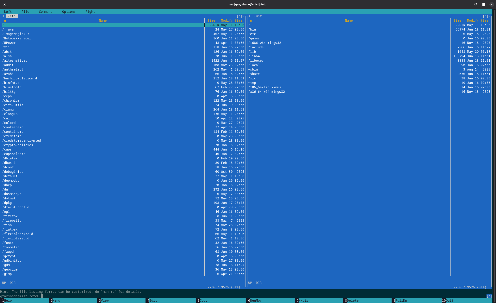
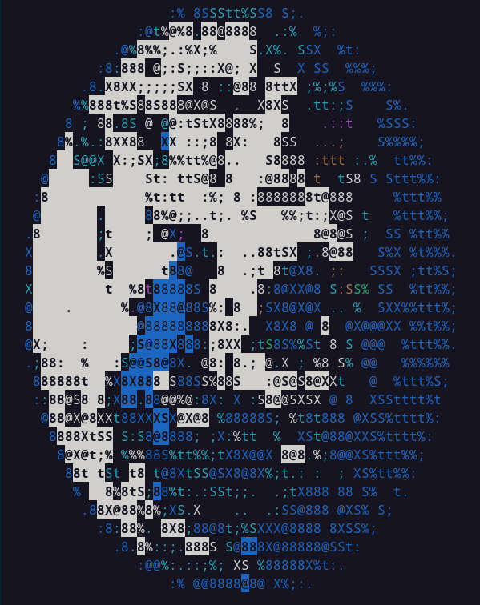
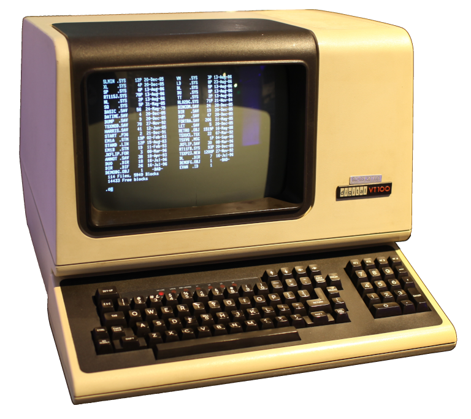
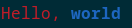
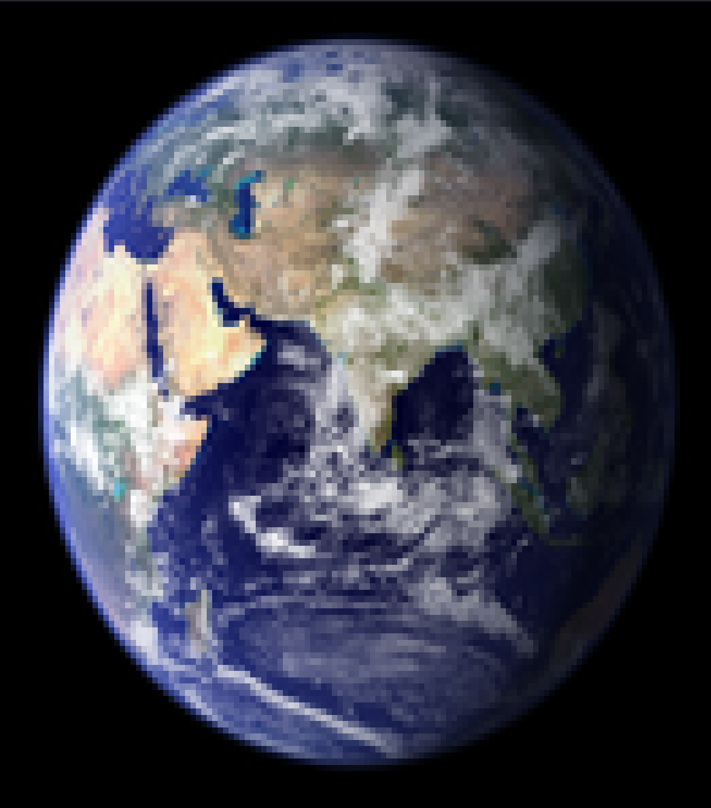
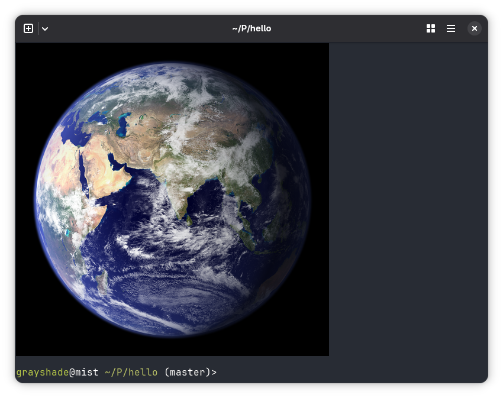
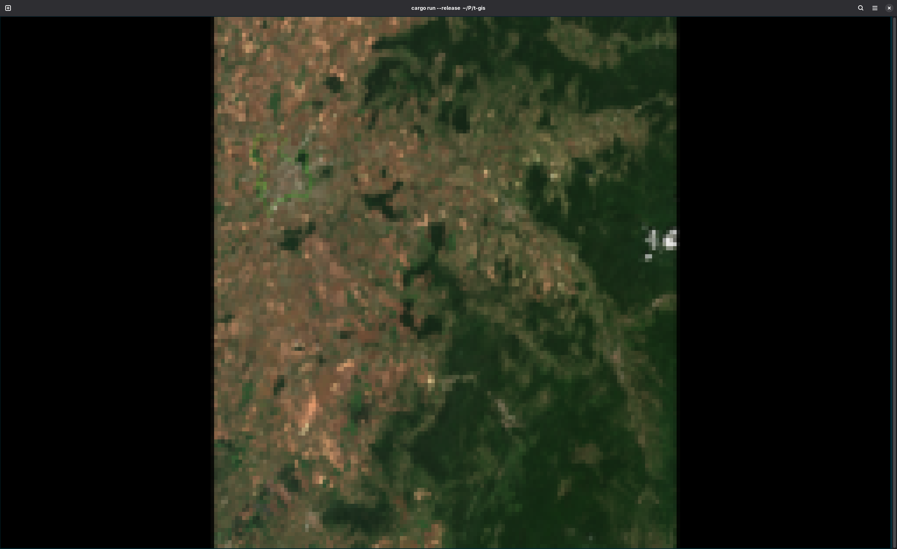
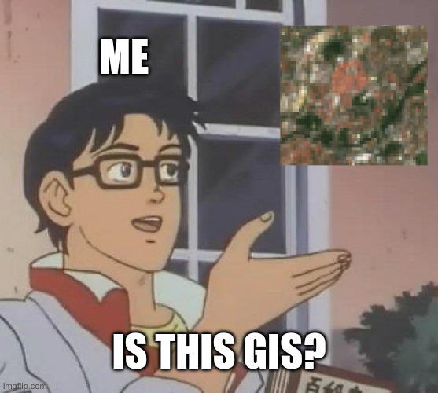
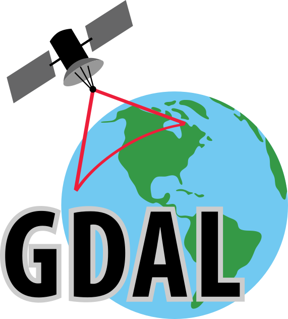

Terminal GIS
Laurențiu Nicola
Motivation
- Have a some workflows that take a lot of input data (~1 TB)
- Running on cloud VMs (that's where the input data is)
- Outputs are sometimes in the 100 GB range
- Downloading that amount of data will take a while
-
I dislike waiting for
scpat 8 MB/s sshfsdoesn't help
What to do?
- I have a terminal and SSH session open anyway, can I do anything with it?
- Maybe even… view my data?
Terminals?

Images!

Terminals, how do they work?


ANSI escape sequences
- Made popular by the DEC VT100 terminal (1978)
-
C0control codes:\n,\r,\x1b (ESC) ESC [ (CSI)-
CSI n m (SGR) -
CSI 1 m(bold / high intensity),CSI 31 m(red foreground),CSI 34 m(blue foreground) -
Can combine multiple SGR codes using
; -
\x1b[31mHello, \x1b[1;34mworld

ANSI escape sequences
- Dozens of them, Wikipedia has a nice list
- Blink, cursor movement, strikethrough, subscript
- 4-, 8-, later 24-bit colors
- More or less compatible with modern terminals
-
If you're running
tmuxunderscreen, good luck - Good luck anyway, because color themes are awful these days
True color and other tricks

Modern image protocols
- Some terminals support real images: iTerm2, Kitty protocols
- 3 KB chunks encoded as base64
<ESC>_Ga=T,s=100,v=30,m=1;<first chunk><ESC>\
<ESC>_Gm=1;<second chunk><ESC>\
<ESC>_Gm=0;<last chunk><ESC>\
A gentle introduction to Rust
#[derive(Copy)]
struct TermSize {
rows: u16,
width_px: u16,
height_px: u16,
}
fn terminal_size() -> Result<TermSize, Error> {
let mut ws = winsize {
ws_row: 0,
ws_col: 0,
ws_xpixel: 0,
ws_ypixel: 0,
};
if unsafe { ioctl(STDOUT_FILENO, TIOCGWINSZ, &mut ws) } != 0 {
return Err(Error::last_os_error());
}
if ws.ws_xpixel == 0 || ws.ws_ypixel == 0 {
return Err(Error::new(
ErrorKind::Unsupported,
"terminal does not support TIOCGWINSZ",
));
}
Ok(TermSize {
rows: ws.ws_row,
width_px: ws.ws_xpixel,
height_px: ws.ws_ypixel,
})
}
Displaying an image
let dataset = Dataset::open(image_path)?;
let src_size = dataset.raster_size();
let term = terminal_size()?;
let dst_size = compute_size(term, src_size);
let data = dataset.read_raster_interleaved((0, 0), src_size, dst_size, &[1, 2, 3])?;
let chunks = data.chunks(3072);
let total_chunks = chunks.len();
let mut stdout = io::stdout().lock();
for (i, chunk) in chunks.enumerate() {
let m = if i == total_chunks - 1 { 0 } else { 1 };
if i == 0 {
write!(
stdout,
"\x1b_Ga=T,f=24,s={},v={},m={};",
dst_size.0, dst_size.1, m
)?;
} else {
write!(stdout, "\x1b_Gm={};", m)?;
}
{
let mut encoder = EncoderWriter::new(&mut stdout, &STANDARD);
encoder.write_all(chunk)?;
encoder.finish()?;
}
write!(stdout, "\x1b\\")?;
}
writeln!(stdout)?;

ratatui
enable_raw_mode()?;
let mut stdout = io::stdout();
execute!(
stdout,
EnterAlternateScreen,
EnableMouseCapture,
EnableSgrPixelMouse
)?;
let backend = CrosstermBackend::new(stdout);
let mut terminal = Terminal::new(backend)?;
terminal.hide_cursor()?;
let picker = Picker::from_query_stdio()?;
let mut app = App::new(picker);
let res = run_app(&mut terminal, &mut app);
// undo everything at the end…
ratatui
loop {
terminal.draw(|f| {
let area = f.area();
self.resize_canvas(area);
f.render_stateful_widget(StatefulImage::new(), area, &mut self.protocol);
})?;
match event::read()? {
Event::Key(key) if key.kind == KeyEventKind::Press && key.code == KeyCode::Esc => break,
Event::Mouse(mouse) => {
let (mx, my) = (mouse.column, mouse.row);
match mouse.kind {
MouseEventKind::Down(MouseButton::Left) | MouseEventKind::Drag(MouseButton::Left) => {
if let Some((lx, ly)) = self.last_mouse_pos {
self.draw_line(lx, ly, mx, my);
} else {
self.draw_point(mx, my);
}
self.last_mouse_pos = Some((mx, my));
self.update_protocol();
}
MouseEventKind::Up(MouseButton::Left) => self.last_mouse_pos = None,
_ => {}
}
}
_ => {}
}
}
GIS where?
- Reading datasets
- Image display
- Mouse handling


Missing features (for me)
- Pixel / feature picking
- Tabs (change detection)
- High bit depth
- NoData handling
- Alpha blending
Why Rust?
- High-level, you can use it like Python, nobody will complain
-
Easy to use, cf.
NameErrorafter running for half a day - Fast, on-par with C, even naïve code might be fast enough
-
Rust means never* getting a
SIGSEGV(or data race) again - Good libraries, and can call into any C library
- Good tooling and documentation
- These days: memory (thanks, OpenAI!)
On AI and security
😶🌫️
- The free lunch is over
- Morris worm (1988)
- Ritchie fat pointers proposal for C (1990)
- Buffer overflows and shell injection bugs (2026)
- Memory without thread safety only gets you so far
Was it worth it?
- It works, if you don't need too many features
- It's fast, if your window is small
- Alternatives? (GUI + headless server component)
Resources
